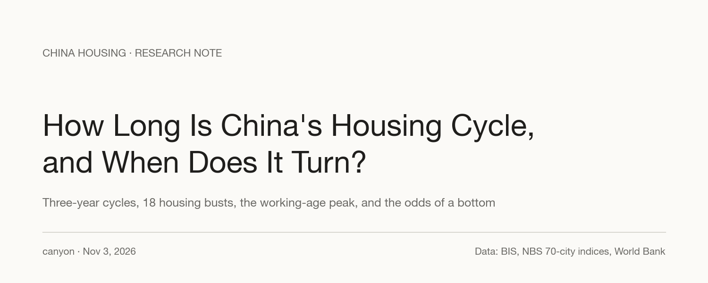
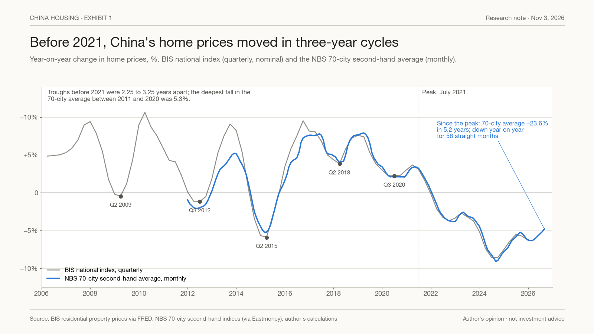
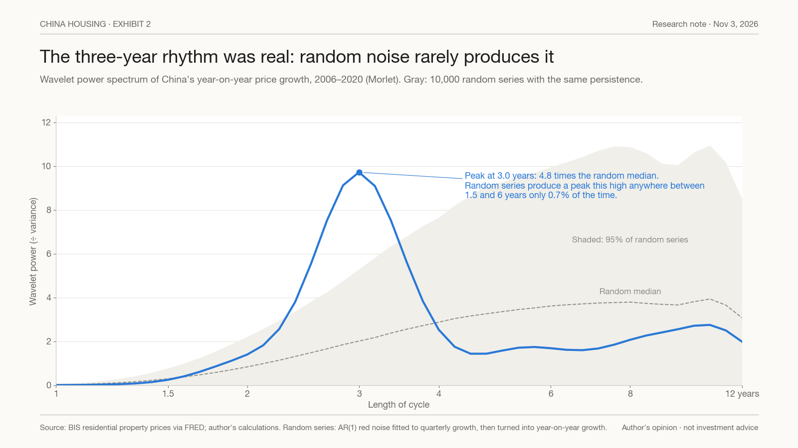
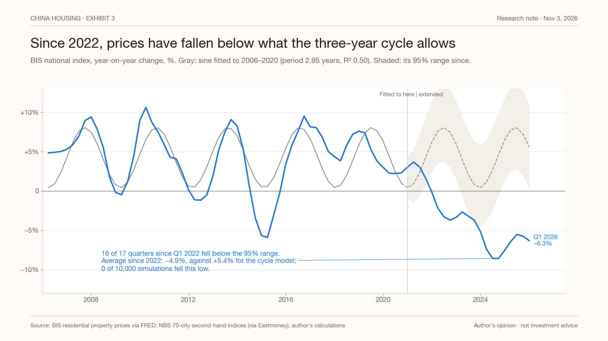
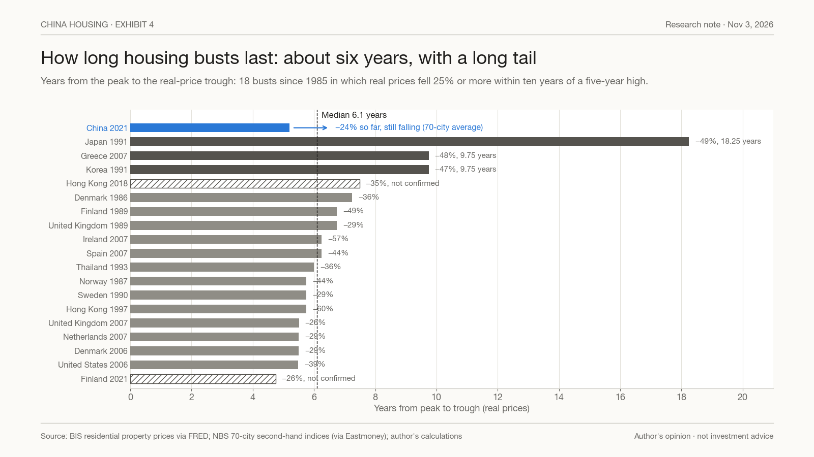
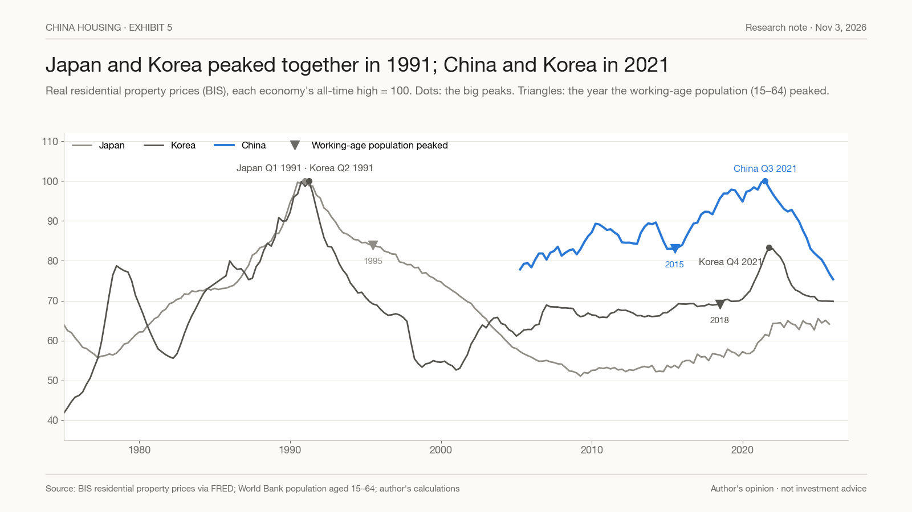
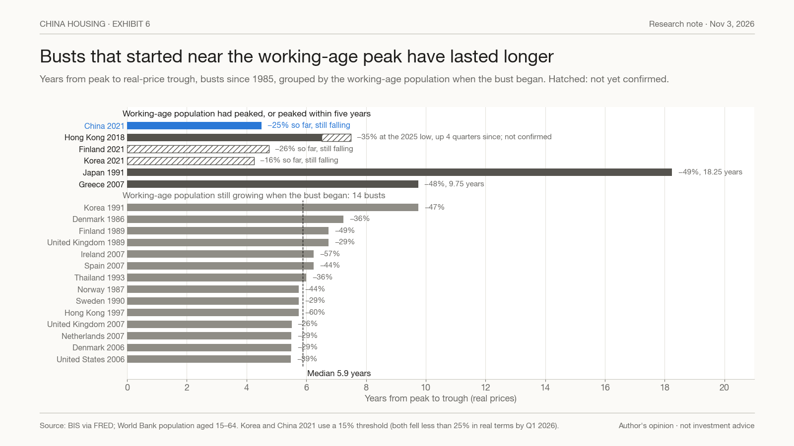
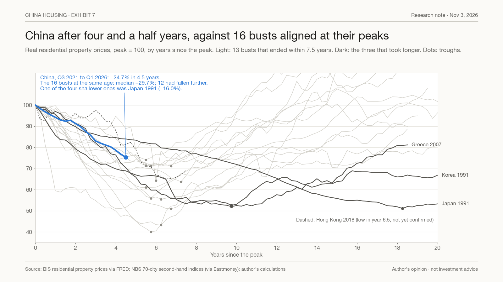
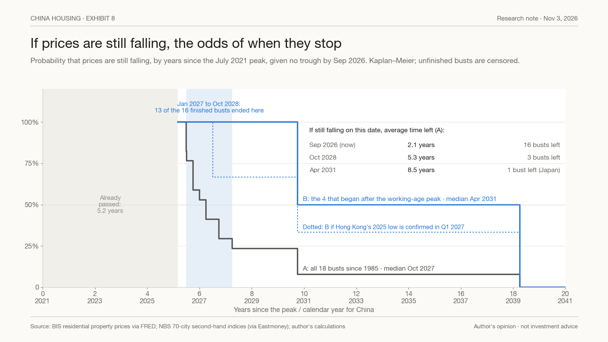

How Long Is China's Housing Cycle, and When Does It Turn?
Before 2021, China's home prices turned roughly every three years. Since the July 2021 peak they have fallen for more than five. If everything has a cycle, how long is this one, and where is the next turn? This note answers with the record of 18 housing busts since 1985, the timing of Japan's and Korea's, and four tools from mathematics and probability: a spectrum, a forecast band, an ensemble and a survival curve. The answer is a distribution, not a date.

Contents · 10 sections
Earlier in this series: What Happened in 2021 and Japan's 30 Years After the Bubble.
Summary#
- 2021 changed the kind of cycle, not just its direction. Before 2021, year-on-year price growth bottomed in Q2 2009, Q3 2012, Q2 2015, Q2 2018 and Q3 2020, 2.25 to 3.25 years apart, and the 70-city average never fell more than 5.3% between 2011 and 2020. Since its July 2021 peak, the average has fallen 23.6% in 5.2 years, and it was still setting new lows in September 2026.
- The three-year rhythm was real. In 2006–2020 data, the wavelet spectrum of price growth peaks at 3.0 years, 4.8 times the median of random series with the same persistence. Random series produce a peak that high anywhere between 1.5 and 6 years only 0.7% of the time.
- It no longer explains prices. Extended past 2020, the cycle's 95% range missed 16 of the 17 quarters since Q1 2022. Average growth since 2022 was −4.9%, against +5.4% for the model; none of 10,000 simulations fell that low.
- Big busts last about six years, with a long tail. Of the 16 busts since 1985 that have ended, the median took 6.1 years from peak to trough, and 13 ended between years 5.5 and 7.25. Korea and Greece took 9.75 years; Japan took 18.25. Nor is there a fixed gap between booms: peak to peak runs from 10.5 to 33 years.
- China is out of step with Japan, but in step with Korea. Japan and Korea peaked a quarter apart in 1991; China and Korea a quarter apart in 2021. What is staggered is the working-age population, which peaked in Japan in 1995, in China in 2015 and in Korea in 2018.
- Busts that begin near that peak have lasted longer. Those that began while the working-age population was still growing had a median of 5.9 years. Of those that began after it peaked, or within five years of the peak, Japan's took 18.25 years and Greece's 9.75; Hong Kong's 2018 bust is not yet confirmed over, and Finland's 2021 bust continues. China is in this group.
- The next turn is a distribution. Given no trough by September 2026, all busts since 1985 put the median bottom in October 2027, with 76% before October 2028. The busts that began after the working-age peak put it in April 2031.
- October 2028 is the dividing line. If China is still setting new lows then, only the long busts remain as guides, and the average time left rises from 2.1 years to 5.3.
2021 changed the kind of cycle#
Exhibit 1 shows year-on-year price growth since 2006, from the BIS national index (quarterly) and the official 70-city survey of second-hand homes (monthly, equal-weighted).

Before 2021 the pattern was regular. Growth peaked and troughed about every three years, and most troughs were slowdowns rather than falls: only in 2014–15 did the national index fall by more than 2% over a year. The deepest fall in the 70-city average between 2011 and 2020 was 5.3%.
What came after 2021 is not a longer version of the same thing. The 70-city average peaked in July 2021 and by September 2026 was 23.6% lower, more than four times the worst fall of the previous decade. It has been down year on year for 56 straight months. The cities no longer move together, either: the four first-tier cities peaked later, in April 2023, and have risen 2.0% since February 2026; Shanghai has risen for eight straight months. Second- and third-tier cities set new lows in September.
The three-year rhythm was real#
A regular-looking cycle can come from noise. If each quarter's price growth carries over part of the last quarter's, a random series drifts in slow swings that look like cycles, and adding four quarters into a year-on-year rate smooths it further. Before calling the three-year rhythm a cycle, it has to beat that kind of noise.
Exhibit 2 is the wavelet spectrum of China's year-on-year price growth from 2006 to 2020: how much of the variation sits at each cycle length. The shaded band is what 10,000 random series produce when they have the same quarter-to-quarter persistence as China's data (an AR(1) process with autocorrelation 0.68), turned into year-on-year rates the same way.

China's spectrum has one sharp peak, at 3.0 years, 4.8 times the random median for that length. Random series produce a peak that high anywhere between 1.5 and 6 years only 0.7% of the time. The pre-2021 cycle was not an artefact of noise. It is consistent with a lagged policy response, with purchase restrictions tightened when prices rose and eased when they fell. But it was already fading before 2021: the power at three years peaked around 2014, and by 2020 it was a twentieth of that.
And it no longer explains prices#
Exhibit 3 fits the simplest form of that cycle, a sine wave, to 2006–2020, and extends it with the same noise.

The sine has a period of 2.95 years and accounts for half the variation before 2021 (R² 0.50). Extended, it called for growth to bottom in early 2021 and early 2024 and to peak in 2022 and 2025. Instead, growth fell below the model's 95% range in 16 of the 17 quarters from Q1 2022; the one exception, Q4 2023, came when the sine itself was at a trough. Average growth since 2022 was −4.9%, against +5.4% for the model, and none of 10,000 simulations fell that low. Whatever has driven prices since 2021, it is not the old cycle running late.
How long big busts last#
If the small cycle no longer applies, the question becomes how long large housing busts last. China's own data cannot answer it. Since 2021 they contain less than one such cycle, and a cycle's length cannot be measured from part of one. So we borrow the record of other economies and treat each past bust as another draw from the same process.
Exhibit 4 lists every bust since 1985 in the 14 economies with BIS real price data: a fall in real prices of 25% or more within ten years of a five-year high.

Of the 18 busts, 16 have ended. The median took 6.1 years from peak to trough, half took between 5.7 and 6.9 years, and 13 of the 16 ended between years 5.5 and 7.25. Three took far longer: Korea's from 1991 and Greece's from 2007, 9.75 years each, and Japan's from 1991, 18.25 years. The median fall in real prices was 41.5%. Regaining the old peak takes longer still: 11 of the 16 have done so, after a median 13.5 years; Japan, Spain, Ireland, Korea and Greece have not.
Nor is there a fixed interval between booms. Within the same economy, the 14 gaps between one big peak and the next have a median of 17.8 years, but they run from 10.5 to 33 years, and only 6 of the 14 fall between 15 and 21. The "18-year property cycle" is a median, not a clock.
Out of step with Japan, in step with Korea#
Exhibit 5 puts Japan, Korea and China on one calendar, each economy's real prices measured against its own all-time high.

It is often said that China's cycle is out of step with Japan's and Korea's. That is half right. China is a generation behind Japan: Japan peaked in Q1 1991 and China in Q3 2021. But Korea peaked in Q2 1991, one quarter after Japan, and again in Q4 2021, one quarter after China.
Korea's second bust has been much milder. Its real prices are 16.2% below the Q4 2021 peak, but its nominal prices fell only 7.7% from their Q3 2022 peak to a low in Q2 2024, and rose 1.8% in the year to Q1 2026. Japan, 35 years on, has recovered part of the way: nominal prices are 48.0% above their 2009 low and rose 5.0% in 2025, but remain 20.9% below the 1991 peak, and 35.9% below in real terms.
What is staggered is not the price cycle but the population. The working-age population (ages 15 to 64) peaked in Japan in 1995, in China in 2015 and in Korea in 2018, marked by the triangles. Of the seven economies in the sample whose working-age population has peaked, six saw a housing bust begin between four years before and eleven years after that peak: Japan, Greece, Hong Kong, Korea, China and Finland. For Korea and China, the 2021 falls are 16% and 25% in real terms so far. Thailand is the exception: its working-age population peaked in 2018, and its real house prices are at a new high. Korea's 1991 bust is an exception the other way: it began 27 years before Korea's working-age peak.
Busts near the working-age peak have lasted longer#
Exhibit 6 splits the busts since 1985 by whether the working-age population was still growing when each began.

The 14 busts that began while the working-age population was growing had a median of 5.9 years, and 13 of them ended within 7.5 years; the exception is Korea 1991. The ones that began after the peak, or within five years of it, have run longer. Japan's took 18.25 years and Greece's 9.75. Hong Kong's 2018 bust reached its low in Q1 2025, six and a half years in and 35% down in real terms; prices have risen for four quarters since, but by our definition a trough counts only after eight quarters without a new low, so it cannot be confirmed before Q1 2027. Finland's 2021 bust is still going. China, whose working-age population peaked in 2015, belongs to this group.
Depth does not follow demography. Korea and China share a demographic generation and peaked a quarter apart, yet Korea's nominal prices fell 7.7% at most, against 21.9% so far for China.
The group is small, and its members share more than demography. Japan and Greece also went through deflation; Greece and Hong Kong had no independent exchange rate. These data cannot separate the causes. The direction is consistent with research finding that ageing lowers real house prices (Takáts, 2010).
Where China is now#
Exhibit 7 lines up the 16 finished busts by years since their peaks, with China drawn on top.

After four and a half years, China's BIS real index is 24.7% below its peak. The 16 busts at the same age had a median fall of 29.7%, and 12 had fallen further than China. Being shallow at this stage says little about what follows. One of the four shallower busts was Japan's: 16.0% down after four and a half years, and 48.9% down at the bottom, 18.25 years in. From year 4.5 to the trough, the 16 busts fell a further 10.5% at the median, with a range from 1.2% (Finland 1989) to 39.1% (Japan 1991). For China, the median path would mean a total real fall of about 33%, and Japan's path about 54%. These are base rates, not forecasts.
When the turn comes: a distribution#
Exhibit 8 turns the record into odds. Given that China's prices were still setting new lows in September 2026, 5.2 years after the peak, what share of comparable busts were still falling after each later year? Busts that have not ended count only for as long as they have lasted (the Kaplan–Meier method). There are two reference classes: A, all 18 busts since 1985, and B, the four that began after the working-age peak.

| A: all busts since 1985 | B: after the working-age peak | |
|---|---|---|
| Busts (finished) | 18 (16) | 4 (2) |
| Median bottom | October 2027 | April 2031 |
| Bottom before October 2028 | 76% | 0% (33% if Hong Kong's low is confirmed) |
| Bottom before April 2031 | 92% | 50% |
The calendar matters because of the shape of the record. Thirteen of the 16 finished busts ended between years 5.5 and 7.25, which for China means January 2027 to October 2028. The other three took 9.75 years or more. The record is a mixture of short busts and long ones, and every quarter that passes without a trough shifts the odds towards the long kind:
| If still falling in | Busts left (A) | Average time left | Median time left |
|---|---|---|---|
| September 2026 (now) | 16 | 2.1 years | 1.0 year |
| October 2028 | 3: Korea 1991, Greece 2007, Japan 1991 | 5.3 years | 2.5 years |
| April 2031 | 1: Japan 1991 | 8.5 years | 8.5 years |
"It has fallen for so long, it must be near the bottom" holds only until October 2028. After that, the longer a bust has run, the longer it has tended to run on. It also means the choice between the two reference classes need not be made now. If prices are still falling in October 2028, the busts left in A are the same long ones that make up B, and the two answers converge.
Data and method#
House prices are the BIS residential property price indices (via FRED), quarterly, nominal and real: 14 economies, with data from as early as 1970, and China from Q2 2005 to Q1 2026. For China we also use the NBS 70-city second-hand price indices, chained from month-on-month changes and equal-weighted, January 2011 to September 2026. The working-age population (ages 15–64) is from the World Bank.
A bust is a fall in real prices of 25% or more within ten years of a high that was the highest of the previous five years, for peaks from 1985. The trough is the lowest point before the old peak is regained, and counts as confirmed only after eight quarters without a lower reading. Year-on-year changes are percentage changes over four quarters, or twelve months.
The spectrum uses a Morlet wavelet (ω₀ = 6) on log growth over Q2 2006 to Q4 2020. The null is an AR(1) process fitted to quarterly growth (autocorrelation 0.678), simulated 10,000 times and turned into year-on-year growth the same way; the p-value takes the highest ratio to the null median anywhere between 1.5 and 6 years, which allows for searching across cycle lengths. The break test fits a sine, with the period chosen between 2 and 4.5 years by fit, and AR(1) residuals (0.87) to data before 2021, then simulates forward from Q4 2020. The probabilities are Kaplan–Meier estimates conditional on no trough by September 2026 (5.17 years after July 2021), with unfinished busts censored at their last reading; the remaining-time table uses the 16 finished busts only. All simulations use a fixed random seed.
This note reflects the author's opinions as of November 3, 2026. It is not investment advice or a recommendation to buy or sell any security or property. Historical patterns may not repeat, and the samples here are small: three long busts in all, and two finished busts in group B.
Sources
- BIS residential property prices (selected series), via FRED: https://fred.stlouisfed.org/ (Q{country}N628BIS and Q{country}R628BIS for each economy)
- National Bureau of Statistics, 70-city residential price indices, via Eastmoney data centre: https://data.eastmoney.com/cjsj/newhouse.html
- World Bank, population ages 15–64 (SP.POP.1564.TO): https://data.worldbank.org/indicator/SP.POP.1564.TO
- Torrence, C. and Compo, G. (1998), "A Practical Guide to Wavelet Analysis", Bulletin of the American Meteorological Society 79(1).
- Slutsky, E. (1937), "The Summation of Random Causes as the Source of Cyclic Processes", Econometrica 5(2).
- Kaplan, E. and Meier, P. (1958), "Nonparametric Estimation from Incomplete Observations", Journal of the American Statistical Association 53(282).
- Takáts, E. (2010), "Ageing and asset prices", BIS Working Papers No. 318.
What would prove this wrong
- OpenHong Kong's real house price stays above its Q1 2025 low through Q1 2027. That would give the post-peak group its first bust to end within 7.5 years, and move China's odds earlier.
- OpenAt least 35 of the 70 cities post monthly gains for six consecutive months. That would mark the end of the post-2021 regime.
- OpenChina's 70-city average is still setting new lows after October 2028. That would leave only the long busts as guides, and support the later dates of the post-peak group.
Disclosure
Notes on this site express the author's opinions. They are based on public information believed to be reliable but not independently audited. Nothing here is investment advice or an offer to buy or sell any security.
中文摘要
- 2021 年变的是周期的种类，不只是方向。之前同比约 3 年一个谷底（2009Q2、2012Q3、2015Q2、2018Q2、2020Q3，间隔 2.25–3.25 年），2011–2020 年 70 城最大回撤只有 5.3%；2021 年 7 月见顶后 5.2 年跌了 23.6%，2026 年 9 月仍在创新低。
- 3 年小周期是真的：2006–2020 年同比的小波谱在 3.0 年有尖峰，是同样持续性的随机序列中位的 4.8 倍；随机序列在 1.5–6 年任何一处冒出这么高的峰，只有 0.7% 的概率。
- 但它解释不了现在：2022Q1 起 17 个季度里 16 个落在它外推的 95% 区间下方；2022 年后平均同比 −4.9%，模型 +5.4%，1 万次模拟里 0 次这么低。
- 大跌约 6 年、有长尾：1985 年后走完的 16 次大跌，从顶到底中位 6.1 年，13 次在第 5.5–7.25 年；韩国、希腊 9.75 年，日本 18.25 年。顶到顶 10.5–33 年都有，「18 年周期」只是中位数。
- 和日本错开、和韩国同步：日韩 1991 年、中韩 2021 年各只差一个季度见顶。错开的是劳动年龄人口见顶：日本 1995、中国 2015、韩国 2018。人口见顶前后开始的大跌更久（日本 18.25 年、希腊 9.75 年），中国属于这一组。
- 下一个转折点是分布：条件在 2026 年 9 月还没见底，全部大跌（A）中位 2027 年 10 月、2028 年 10 月前见底 76%；人口见顶后（B）中位 2031 年 4 月。
- 2028 年 10 月是分水岭：过了还在创新低，就只剩长型样本，平均剩余时间从 2.1 年升到 5.3 年；A、B 两种看法在那时收敛。
- 披露：发表时作者不持有中国地产开发商或地产相关证券。以上不构成投资建议。
Comments
Comments run on GitHub Discussions through giscus; posting needs a GitHub account. Off-topic or abusive comments are removed.